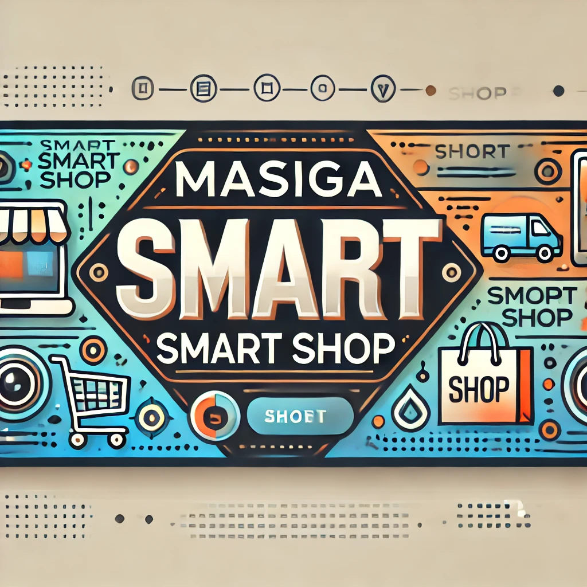
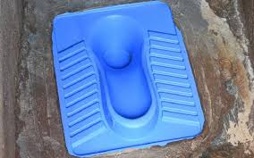
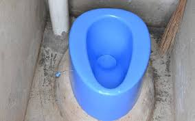
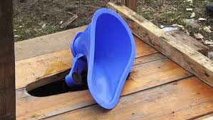
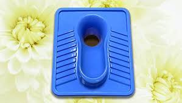
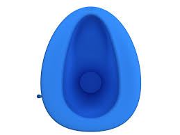
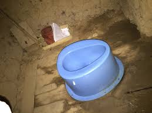

Masiga Smart Shop
Find perfect toilet
fixture for your home
Introducing the SATO Smart Sanitary Ware with Auto-Opening & Closing Lid. This squat pan is perfect for modern households and facilities looking for a clean, efficient and long-lasting sanitation solution. It is Affordable, Durable, and Designed for Better Hygiene.
Categories



📦 Why Choose SATO
Affordable Innovation: High-quality, functional designs at budget-friendly prices. Easy Installation: SATO products are designed for quick and seamless setup. Aligns your body naturally for efficient and strain-free elimination.
Affordable Innovation: High-quality, functional designs at budget-friendly prices. Easy Installation: SATO products are designed for quick and seamless setup. Aligns your body naturally for efficient and strain-free elimination.
Featured
✅ Ergonomic Squat Design
Promotes a natural posture for healthier and more efficient bowel movements.
Designed with sturdy, slip-resistant contours to ensure user comfort and safety.
🔄 Smart Auto-Opening & Closing Lid
Weight-Activated Convenience: The lid opens on a light load and deposits the load then closes again.
Soft-Close: The lid closes softly preventing slamming thus ensures peace during use.
🧼 Hygienic & Easy to Maintain
Water-Saving Design: Engineered for low water consumption without compromising performance.
Easy-to-clean materials ensure long-term cleanliness with minimal effort.
Promotes a natural posture for healthier and more efficient bowel movements.
Designed with sturdy, slip-resistant contours to ensure user comfort and safety.
🔄 Smart Auto-Opening & Closing Lid
Weight-Activated Convenience: The lid opens on a light load and deposits the load then closes again.
Soft-Close: The lid closes softly preventing slamming thus ensures peace during use.
🧼 Hygienic & Easy to Maintain
Water-Saving Design: Engineered for low water consumption without compromising performance.
Easy-to-clean materials ensure long-term cleanliness with minimal effort.

Type 1
Ksh. 800
Type 1
Ksh. 800
Type 2
Ksh. 750

Type 3
Ksh. 900
Type 3
Ksh. 900

Perfect fit and easy installation to make your toilet look modern and hygenic, Upgrade your toilet today!!
©
Masiga Smart Shop, All rights reserved